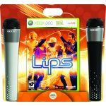

Start channeling your favourite pop star because it's you, your friends and most important your music that turns Lips, the new singing game for Xbox 360, into the world's ultimate party experience with wireless motion-sensitive microphones.
-
Details
- Screenshots
- Features
-
Microphones - Two wireless interactive microphones featuring stylish interactive motion sensors and lights, the microphones respond to singers' actions and can be used as percussion accompaniments. With the freedom and encouragement provided by the high-quality wireless microphones, everyone can live their singing dreams in style.
Music - Lips will include a diverse selection of songs, including your favorite blasts from the past such as "Bust a Move" by Young MC, as well as new songs from breakout artists such as "Mercy" by Duffy and "Young Folks" by Peter Bjorn and John.
Play Along - Using the standard Xbox 360 controller, up to two people will be able to join the fun and choose from a variety of percussion accompaniment to play along with the music in Lips. By placing control of various tambourines, claps and of course the ubiquitous cowbell at the fingertips of anyone with a controller, Lips creates a social entertainment experience for friends, co-workers and kids alike.
Xbox Live - From the songs that will come with the game, to your own music collection and the ability to download new tracks from Xbox LIVE Marketplace, Lips will continually provide new music to bring people together and keep the party going.

{kind=link}
{kind=link}
{kind=link}
{kind=link}